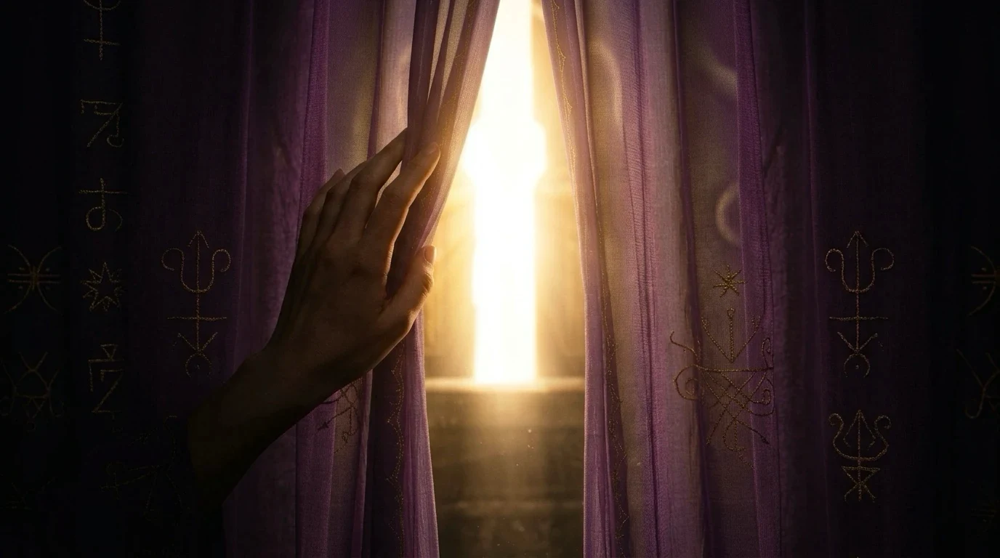
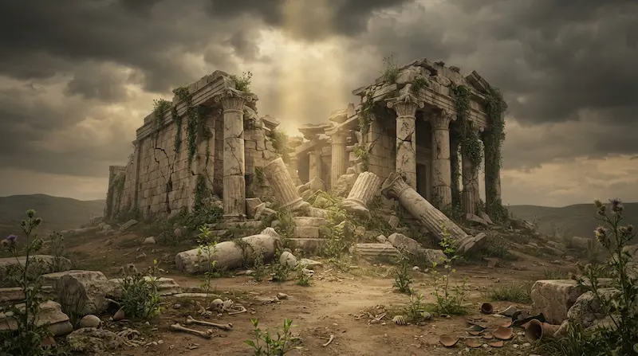
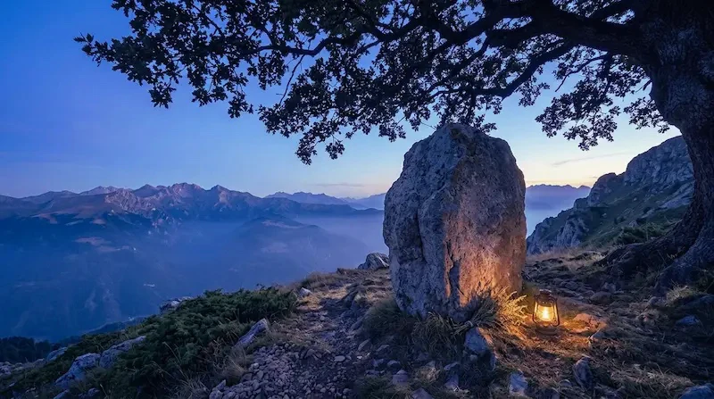

Studi e riflessioni

Chi lo guarda da fuori vede soltanto tessuto, ombra e silenzio. Chi lo attraversa scopre che, dietro ciò che appare, i misteri hanno una direzione. E un nome.
Questo è uno spazio per chi ha sete di conoscere Dio. Non l'universo, non l'energia, non un tutto indistinto: un Dio presente, personale, conoscibile. Non quello delle religioni, non quello di cui parlano predicatori e guru. Un Maestro, una Guida, uno Spirito con cui entrare in relazione.
Io non sono una maestra spirituale. Chiamatemi come volete, ma non chiamatemi maestra. Sono soltanto un canale, una facilitatrice. Vi è un solo Maestro, e ciò che mi interessa è che Lui venga conosciuto. Non guido verso di me, ma verso Colui che, sollevato il velo, resta.
Ipnosi, tarocchi, viaggi astrali, sogni, visioni e stati oltre la veglia ordinaria sono, per me, strumenti e chiavi. Non il fine. Ogni chiave apre una stanza della stessa casa: quella interiore, dove Dio può smettere di essere un'idea e diventare Presenza.
Non è un luogo per tutti. Ma chi ha sentito, anche una sola volta, che dietro le cose c'è Qualcuno che guarda e chiama per nome, forse riconoscerà questo luogo.
A chi bussa verrà aperto perché l'ingresso è parte del rito.
È una soglia, un varco sottile. Un luogo di passaggio, ma anche un posto dove sostare, se ne senti il richiamo. Sono le anime a incontrarsi e a scegliersi. È il richiamo sotto la pelle quello che ti dice: resta.

Cosa succede quando ciò che credevamo sacro, crolla? Un antico profeta e una grande mappa simbolica della trasformazione interiore, dall'esilio al ritorno alla Presenza.
2 settembre 2026
Nel libro di Giosuè la pietra ritorna continuamente: memoria, peso, soglia, testimone. Quattro segni antichi per leggere le pietre che portiamo, ancora oggi, dentro di noi.
15 agosto 2026